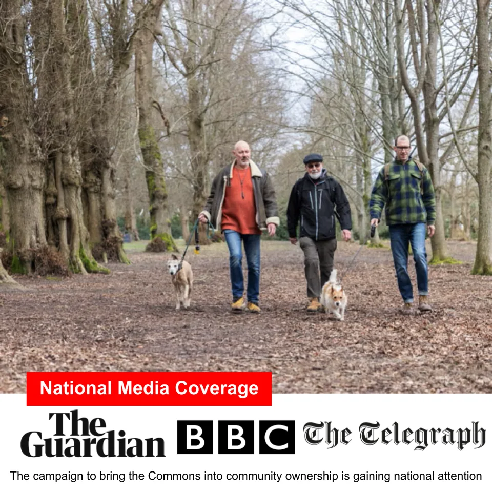

The Commons Sale & Community Bid
Tunbridge Wells & Rusthall Commons were recently placed on the market. Thousands of local residents have backed The Friends' community bid to secure permanent community stewardship.
Where do things stand right now?
The Commons are currently being marketed by Targetfollow as part of a wider estate that also includes The Pantiles. As this is a significantly different commercial package, The Friends will not be seeking to purchase the commercial retail estate.
Our ambition remains steadfast: to secure the Commons for the permanent benefit of the community. We stand ready should circumstances change, and there are currently no immediate calls on community pledges.
If you would like to speak to someone directly about the bid, you are very welcome to contact John Barber at johnspbarber@gmail.com.

National Press Coverage
The race to secure community ownership attracted widespread national media coverage:
Key Facts About Commons Ownership
Valuing and understanding the legal status of common land is complex. Here are the core legal and financial facts behind our community bid.
Statutory Protection
The Commons are strictly protected under the Commons Act 2006 and the historic County of Kent Act 1981. Public access on foot is guaranteed by law and cannot be revoked by any private freeholder.
Commons Conservators
Day-to-day management and byelaw enforcement rests with the Commons Conservators, an independent statutory body established by Parliament in 1890. A freeholder does not control day-to-day operations or byelaws.
Valuation (~£1,000,000)
Professional valuations commissioned by The Friends reflect the lack of development rights and the ongoing liabilities of maintenance, indicating a fair value of approximately £1 million, reflected in our community bid.
Why Our Community Backs the Buyout
Thousands of local residents have registered confidential financial pledges and active support. Hear firsthand why dog walkers, young families, conservationists, local historians, and lifelong neighbours are united behind securing our Commons forever.
Add your voice to our growing community coalition
Have a personal reason for protecting the Commons? Make a pledge or share your story with our committee.
Make a Financial Pledge for Community Ownership
A pledge is an expression of financial support should a community purchase proceed. No money is taken now. Pledges are only called upon if a viable acquisition is agreed and contracted.
Note: Pledges remain strictly confidential and do not commit you until formal terms and legal contracts are presented to supporters.
To protect the charity’s negotiating position and ensure our community achieves the best possible acquisition terms, overall pledge totals and fundraising targets are kept strictly confidential by the Trustees.
Pledge Submission Form
Sale & Community Bid FAQs
No money is being called upon. The Friends will not be purchasing commercial retail property. Pledges remain on standby should an opportunity arise in the future to purchase the Commons separately on behalf of the community.
Under the Commons Act 2006, works that prevent or impede access to common land or involve erecting buildings require ministerial consent from the Secretary of State, which is rarely granted for green spaces. Furthermore, the local planning authority’s policies designate the Commons as protected open space.
No. Public rights of access on foot for air and exercise are statutory. The byelaws that govern conduct on the Commons are made and enforced by the Commons Conservators, not the freeholder.
Community ownership removes ongoing commercial uncertainty. It guarantees that stewardship decisions are made purely in the interest of wildlife, biodiversity, and local residents rather than financial speculation.